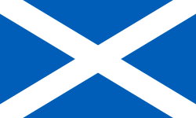
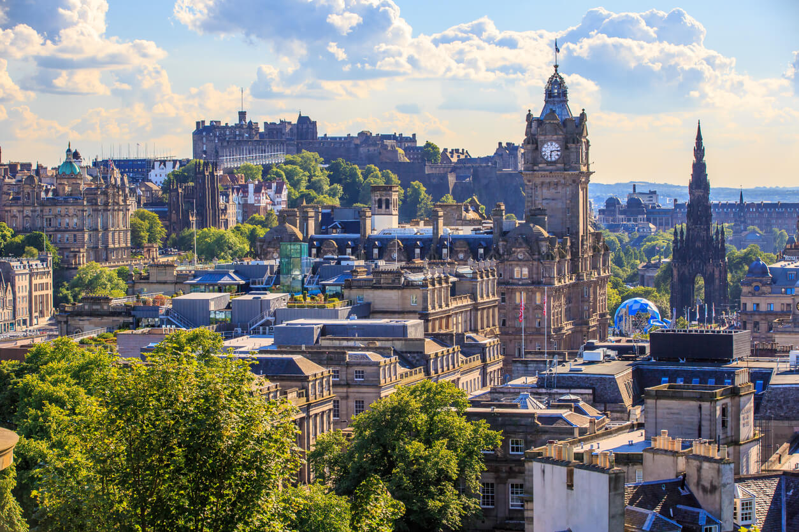

A Escócia
Sobre a Escócia
A Escócia é um dos países do Reino Unido e cobre o terço norte da ilha da Grã-Bretanha. Ele compartilha uma fronteira com a Inglaterra ao sul e outra (para saber mais sobre a geografia, vá para Geografia), formada pelo oceano Atlântico, com o mar do Norte a leste e com o canal do Norte e o mar da Irlanda a sudeste. Além do continente, o país é composto por mais de 790 ilhas, incluindo as Ilhas do Norte e as Hébridas.
A Capital da Escócia
Edimburgo a capital e segunda maior cidade do país, foi o centro do Iluminismo Escocês do século XVIII, que transformou a Escócia em uma das potências comerciais, intelectuais e industriais da Europa. Glasgow, maior cidade, já foi um dos polos industriais mais importantes do mundo. As águas territoriais escocesas consistem em um grande setor do Atlântico Norte e do mar do Norte,[11] região que contém as maiores reservas de petróleo da União Europeia. Isso tem dado a Aberdeen, a terceira maior cidade do país, o título de capital do petróleo da Europa.
História da Escócia
Agora que você já sabe um pouco sobre a Escócia, vamos falar sobre a história dela. A Escócia tem uma história rica e complexa, marcada por batalhas, alianças e mudanças políticas. Desde os tempos antigos, quando tribos celtas habitavam a região, até a formação do Reino da Escócia no século IX, a história escocesa é repleta de eventos significativos. A união com a Inglaterra em 1707 formou o Reino Unido, mas a Escócia manteve sua identidade cultural e política.
O Reino da Escócia emergiu como um Estado soberano independente na Alta Idade Média e continuou a existir até 1707. Por herança, em 1603, o rei James VI da Escócia se tornou rei da Inglaterra e o rei da Irlanda, formando assim uma união pessoal entre os três reinos. A Escócia entrou posteriormente numa união política com a Inglaterra em 1 de maio de 1707 para criar o novo Reino Unido da Grã-Bretanha. A união também criou o novo Parlamento da Grã-Bretanha, que sucedeu ao Parlamento da Escócia e o Parlamento de Inglaterra. O Tratado de União foi acordado em 1706, promulgado pelo Tratado de União de 1707, tendo sido aprovados pelos parlamentos de ambos os países, apesar de algumas revoltas populares e da oposição antiunionistas em Edimburgo, Glasgow e em outros lugares.[13][14] A Grã-Bretanha posteriormente entrou em uma união política com a Irlanda em 1 de janeiro de 1801, para criar o Reino Unido da Grã-Bretanha e Irlanda.

Geografia da Escócia
Com base nos conhecimentos históricos sobre a Escócia fica mais fácil de entender sua geogria e sociedade. A Escócia é conhecida por sua paisagem diversificada, que inclui montanhas, lagos e costas deslumbrantes. As Highlands, uma região montanhosa ao norte, são famosas por suas belezas naturais e trilhas para caminhadas. Os lagos, como o Lago Ness, são populares entre os turistas e estão cercados por lendas e mitos.

Aqui vai uma tabela com as 3 cidades mais populosas da Escócia
| Ranking | Nome da cidade | População |
|---|---|---|
| 1 | Glasgow | 590.507 |
| 2 | Edimburgo | 459.366 |
| 3 | Aberdeen | 196.610 |
| Total: 1.246.483 | ||
Cultura da Escócia
A cultura escocesa é rica e variada, com influências celtas e nórdicas. A música tradicional, como o uso de gaitas de foles, é uma parte importante da identidade escocesa. Festivais, danças e eventos culturais são comuns em todo o país, celebrando a herança escocesa.
O Hogmanay, o Ano Novo escocês, é uma celebração famosa que inclui fogos de artifício, festas e tradições únicas. O Burns Night, em homenagem ao poeta Robert Burns, é outra celebração importante, onde pratos tradicionais como o haggis são servidos.
A cidade de Edimburgo recebe no verão, aquele que é considerado o mais importante festival cultural do mundo. O Festival de Edimburgo possui grande destaque entre os principais eventos do Reino Unido e da Europa.
O lago Ness é uma das grandes atrações turísticas escocesas, onde existe o mito do Monstro do lago Ness. Desde o início do século os habitantes da região e turistas afirmam ter visto um monstro pré-histórico no lago. Muitas expedições foram feitas no local e até hoje nada foi encontrado.

A cultura linguística da Escócia
Aqui estão algumas frases em escoces para que você possa usar quando for viajar
Halò, ciamar a tha thu? / Olá, como vai?
Dè an t-ainm a tha ort? / Qual é o seu nome?
Cò às a tha thu? / De onde você é?
Tha mi à Brazil. / Eu sou do Brasil.
Na Escócia eles também tem o inglês como língua oficial
A gastronomia escocesa
A gastronomia escocesa é afetada pela sua geografia e conhecida por seus pratos tradicionais, como o haggis, um prato feito com carne de carneiro, aveia e especiarias. Outros pratos populares incluem o neeps and tatties, purê de nabo e batata, e o shortbread, um biscoito amanteigado. A Escócia também é famosa por suas destilarias de uísque, produzindo algumas das melhores bebidas do mundo.
O whisky escocês é uma bebida icônica, com várias regiões de produção, cada uma com seu próprio estilo e sabor. O uísque escocês é conhecido por sua qualidade e tradição, sendo um símbolo da cultura escocesa.